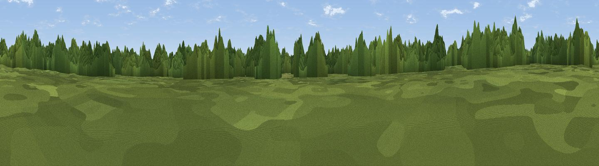

Thetford Forest interior (Fire Road 12, Santon Downham)
#46260 in England · top 97% of its area beats it · near Brandon · open accessWhere it is
The exact computed spot (TL 80941 84663). Click the marker for map links.
Public access: this spot lies on mapped open-access land (CRoW Act 2000) — you may roam here on foot. Computed from Natural England's CRoW access layer and OpenStreetMap rights of way — not the legal definitive map. Always verify locally.
The view, rendered

A 360° render of this exact spot computed from the terrain model, tree cover and land cover — summer colours, afternoon light, calibrated against photographs of famous viewpoints. Real trees, hedges and buildings will differ in detail.
The panorama
Grey silhouette: terrain skyline in each direction (720 bearings, Earth curvature and refraction included). Dashed green: skyline with trees (+15 m) and buildings (+8 m) as obstacles. Blue strip: how far the ground is visible on each bearing.
Where the view opens
Wedge length = distance to the farthest visible ground on that bearing (vegetation-aware). Rings at 10, 25 and 50 km.
What fills the view
93% woodland · 5% grassland · 2% cropland
Angular shares of the visible panorama (visual magnitude), not map area. Landscape diversity 0.13 (0–1 Shannon).
Key numbers
More beautiful places nearby
The staircase of upgrades: each row has a higher view potential than everything closer. Driving times are estimates from straight-line distance, calibrated against real road routing — check an actual route before setting out.
| Place | Direction | Drive | Score |
|---|---|---|---|
| Viewpoint near Croxton | NE · 4 km | ~9 min | 10.0 |
| RAF Lakenheath Viewing Area | WSW · 6 km | ~12 min | 12.0 |
| Castle Hill | ESE · 7 km | ~14 min | 14.7 |
| Washland Viewpoint | WNW · 9 km | ~18 min | 17.3 |
| New Fen viewpoint | W · 10 km | ~19 min | 17.8 |
| Joist Fen viewpoint | W · 11 km | ~21 min | 19.3 |
| Mill Mound | W · 26 km | ~42 min | 20.1 |
| Viewpoint near Little Downham | W · 29 km | ~46 min | 21.5 |
52.43000, 0.66000 · source: verification · position refined by local search. Computed location — check access rights before visiting.